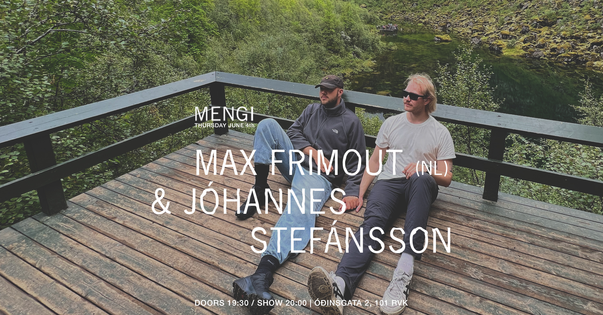

Upcoming Events

FRI 29.05 RAKEL
Tickets Friday, May 29th RAKEL doors 19:30 / show 20:00 2500kr / 2000kr students / pay what u can Rakel Sigurðardóttir hefur verið partur af íslensku tónlistarsenunni í þónokkur ár. Tónlist hennar hefur reglulega ratað á vinsældarlista hér á landi, hún komið fram og ferðast um heiminn með fjölmörgum þjóðþekktum tónlistarmönnum og hljómsveitum. Árið 2025 gerði hún plötusamning við útgáfufyrirtæki Ólafs Arnalds, OPIA Community og gaf út plötuna ‘a place to be’. Platan hefur hlotið mikið lof bæði á Íslandi sem og erlendis, en platan hlaut t.a.m. Kraumsverðlaunin 2025 og tilnefningu sem plata ársins á Íslensku tónlistarverðlaununum í ár. Rakel hlaut einnig verðlaun sem flytjandi ársins á Íslensku tónlistarverðlaununum. --EN-- RAKEL is an Icelandic artist working in song, memory, and atmosphere. Her music folds together voice, field recordings, and emotion into layered compositions that feel both intimate and expansive. Since her debut EP Nothing Ever Changes (2021), she has become a quietly singular presence in the Icelandic music landscape. Her debut album a place to be (released October 2025 via OPIA Community) marked a defining moment in her work. Co-created with Danish producer and longtime collaborator Sara Flindt, the album is part diary, part landscape, shaped by the acoustics of real places: her family’s farm in Hrútafjörður, Sara’s Copenhagen dorm room, and a studios of friends around Iceland and Denmark. Birds, clocks, breath, strings, soft synths, the creak of a floorboard, nothing is too small to become part of the composition. The album was met with wide critical acclaim, earning nominations for Album of the Year and Song of the Year, and establishing RAKEL as one of the most compelling new voices in Icelandic music. In 2026, she was awarded Performer of the Year, further cementing her reputation as a captivating live artist.

THU 04.06 Max Frimout & Jóhannes Stefánsson
Tickets Thursday, June 4th MAX FRIMOUT (NL) & JÓHANNES STEFÁNSSON doors 19:30 / show 20:00 2500kr / 2000kr students / pay what u can Long-lost friends Max Frimout and Jóhannes Stefánsson present new music on May 4th at Mengi. A few days prior, they retreat to Jóhannes’s hometown of Akureyri with nothing but synthesizers, pyjamas, and each other, isolating themselves to focus, to bring music back to Reykjavík they will showcase together. Max Frimout [NL] and Jóhannes Stéfansson [IS] are electronic instrumentalists, composers, and sonologists who met through music during their studies at the Institute of Sonology at the Royal Conservatory in The Hague. https://superpang.bandcamp.com/album/morphed-remarks @maxfrimout @johannes.stef

FRI 05.06 SIGRÚN
Tickets Friday, June 5th SIGRÚN doors 19:30 / show 20:00 2500kr / 2000kr students / pay what u can Sigrún Jónsdóttir (f. 1989) er söngvari, pródúser, tónskáld og hljóðfæraleikari. Sigrún hefur komið fram undir eigin nafni síðan 2016 og síðan þá gefið út 5 smáskífur: Hringsjá, Tog, Smitari, Onælan og Arfur, og nú nýverið breiðskífuna Monster Milk sem kom út í október 2024. Tónlist hennar þræðir mörk þess hefðbundna og óhefðbunda í popp- og raftónlist þar sem leikið er með röddina og áferðarmikla takta og hljóðheima. Nýlega hefur hún tekið þátt í hátíðum á borð við Iceland Airwaves, Innipúkann, Upprásina í Hörpu og tónleikaröðinni Kátt á línunni. Nýlegasta útgáfa hennar er platan Monster Milk sem kom út í október 2024. Sigrún er í grunninn hljóðfæraleikari en hún lagði stund á klarínettnám við Tónlistarskóla Hafnarfjarðar og ryþmískt básúnunám í Tónlistarskóla FÍH. Þaðan lá leiðin í Listaháskóla Íslands þar sem hún nam tónsmíðar við nýmiðladeild skólans og útskrifaðist þaðan árið 2015. Sem hljóðfæraleikari hefur hún unnið með fjölda ólíkra tónlistarmanna og hljómsveita á borð við Sigur Rós, Björk, Florence and the Machine og Damon Albarn á tónleikaferðum þeirra um heiminn í gegnum árin. // Sigrún Jónsdóttir (b. 1989) is a singer, producer, composer and multi-instrumentalist. Since 2016, Sigrún has been writing and producing her own music and has released 5 EP’s; Hringsjá, Tog, Smitari, Onælan and Arfur, as well as her most recent critically acclaimed LP Monster Milk in 2024. Her music threads the conventional and experimental together in pop and electronic music where she toys with the voice and textured beats and soundscapes. Recently she has participated in Icelandic music festival such as Iceland Airwaves, Innipúkinn and Upprásin in Harpa Concert Venue. Sigrún’s background is found in classical clarinet studies as well as rhythmic trombone performance, but her focus shifted when she joined the Iceland Academy of the Arts, completing a Bachelor’s degree in composition and new media. As an instrumentalist she has toured and collaborated with Björk, Sigur Rós, Florence and the Machine and Damon Albarn as part of their live show bands throughout various world tours.

SAT 06.06 Ólöf Arnalds/Skúli Sverrisson/Davíð Þór Jónsson: Spíra - Útgáfutónleikatvenna
Tickets Saturday, June 6th ÓLÖF ARNALDS/SKÚLI SVERRISSON/DAVÍÐ ÞÓR JÓNSSON: SPÍRA - ÚTGÁFUTÓNLEIKATVENNA 2 SHOWS @ 17:00 & 20:00 4.000kr / 3.500kr students Í vetur leit fimmta sólóplata Ólafar Arnalds, Spíra, dagsins ljós en Ólöf sneri nýverið til baka af tónleikaferðalagi um Evrópu til að kynna hana. Hljóðfæraleikarar á Spíru eru auk Ólafar þeir Davíð Þór Jónsson og Skúli Sverrisson sem stýrði upptökum. Platan hefur hlotið einróma lof gagnrýnenda sem sjá má hér fyrir neðan. Spíra markar að mörgu leyti ákveðið afturhvarf til þeirrar fagurfræði sem Ólöf vann með á sinni fyrstu plötu, Við og við. Hún býr yfir tærum hljóðheimi sem byggir fyrst og fremst á rödd Ólafar við eigin undirleik, auk afar fíngerðra viðbóta á önnur hljóðfæri. Á tónleikunum í Mengi gefst áheyrendum sjaldgæft tækifæri til að heyra Spíru flutta í heild sinni af þessu frábæra tríói sem á sér bæði langa og farsæla samstarfssögu. Athugið að um tvenna tónleika er að ræða. Aðrir eru síðdegistónleikar og hinir kvöldstund. Kaupið miða hér👇 Kl. 17: https://hlekkir.blikk.tech/07b62854-05ea-421b-8baf-905f08b28bf0 Kl. 20: https://hlekkir.blikk.tech/26a45a86-77ac-41bd-8b19-6bed115a561b —---------------------------------------------------------------- Ólöf Arnalds/Skúli Sverrisson/Davíð Þór Jónsson: Spíra - Double record release concert day This winter saw the release of Ólöf Arnalds’s fifth solo album, Spíra, and she recently returned from a European tour promoting the record. Alongside Ólöf, the musicians on Spíra are Davíð Þór Jónsson and Skúli Sverrisson, who also produced the album. In many ways, Spíra returns to the sound and atmosphere of Ólöf’s first album, Við og við. The music is built mainly around her voice and own accompaniment, with subtle contributions from other instruments. The concerts at Mengi give audiences a rare chance to hear Spíra performed in full by this trio, celebrating their long and successful collaboration. Note that there are two concert times. One in the afternoon and one in the evening. Buy tickets here👇 At 17:00: https://hlekkir.blikk.tech/07b62854-05ea-421b-8baf-905f08b28bf0 At 20:00: https://hlekkir.blikk.tech/26a45a86-77ac-41bd-8b19-6bed115a561b Ólöf Arnalds is an Icelandic composer and multi-instrumentalist. Her most distinctive asset is, nonetheless, her voice of instantly captivating, spring water chasteness possessed of a magical, otherworldly quality that is simultaneously innocent yet ancient (“somewhere between a child and an old woman” according to no less an authority than Björk). Her work has been called "otherworldly" by The New York Times, "stunning" by SPIN, "bewitching" by Rolling Stone, "remarkable" by the NME, "ethereal" by Vanity Fair and "impossibly lovely" by Paste ----- Ask anyone: Ólöf Arnalds can mesmerise a room with nothing but a small guitar and her distinctive soprano voice. Across five albums in nearly twenty years, her gently plucked guitar, charango, violin and koto have provided the bedrock for vivid narrations straddling the mundane and mythological, sketching out rich emotional territories often concerned with love–equal parts familial, platonic and romantic. The music evokes Joanna Newsom, Nico’s early solo albums and Vashti Bunyan but the deceptively simple arrangements and tightly braided melodies are, ultimately and unmistakably, very much her own. Although a classically trained singer and violinist, Ólöf has been an active practitioner of popular music for thirty years. When she joined múm in 2003, commanding attention on stage with a horned Stroh violin, she first became a fixture on the international scene. But the watershed moment was the 2007 release of her debut solo album Við og við (Now and Again, wider international release in 2009), produced by Sigur Rós’ Kjartan Sveinsson. It seemed to appear fully formed out of the ether, and became a local classic overnight, winning accolades such as ‘Best Alternative Album’ at the Iceland Music Awards, named ‘Record of the Year’ by Iceland’s principal daily newspaper and recognised as one of the decade’s 100 best albums by eMusic. She followed the record up with a strict touring schedule, sharing the stage across Europe, America and Australia with artists like Dirty Projectors, Blonde Redhead, Sigur Rós, Air, CocoRosie, Jonathan Richman and Nick Cave’s group Grinderman. Even in massive concert halls full of crowds awaiting bombastic rock’n’roll, the magical grip of her solo show is something to behold. Ólöf’s consecutive albums featured guests such as Ragnar Kjartansson and Björk (who famously described Ólöf as “somewhere between a child and an old woman”) and were met with gushing praise from the press and audiences alike–The New York Times! Vanity Fair! NME! Spin! Mojo! Paste! Guardian!–but by 2015 she found herself drifting towards other projects: founding the grassroots cultural space Mengi in Reykjavík, working as a copywriter, raising her son and step-daughter, and collaborating with her long-time friend (and now husband!) Skúli Sverrisson, for example on a piece written especially for Ólöf and the Icelandic Symphony Orchestra. With her new album, Spíra (Sprout, produced by Skúli), Ólöf has found her joy in writing songs rekindled. In many ways it harkens back to her debut: it is exclusively in Icelandic, the arrangements are markedly stripped back compared to her last two records, and it is mostly recorded in single takes in the company of close collaborators and friends, much like her debut all those years ago. Press quotes: “Stunning... Arnald’s ruminations on love, friendship, family and artistic creativity draw the listener in to share her singular musical vision.” Rock’n’Reel – 4 stars **** “Spíra is exquisite... lyrically compelling and captivating throughout.” HiFi News – 8/10 “First album in a decade from singularly beguiling Icelandic singer-songwriter...Spíra effectively re-distils the fragile, folk-hymnal essence of her 2007 debut... Tracks like the crystalline ‘Stein Fyrir Stein’ nod to Kate Bush while the aria-like, organ-wreathed chorus of ‘Úfinn Sjór’ is as otherworldly as it is ineffably uplifting.”MOJO – 4 stars **** “Icelandic chamber-folk singer’s return dazzles... Between the playful ‘Vorkoma’ and luminous ‘Lifandi’, Spíra finds Arnalds talent revivified, blooming to earthy, dreamy and transporting effect.” Record Collector – 4 stars **** “Mesmerising... With a voice as crystal clear as a mountain spring, Arnalds deals in haunting folk songs... If you’ve previously fallen under the spell of Joanna Newsom, this is for you.” The Sun – 4 stars **** “These deceptively simple, acoustic songs of nature, family and love could be centuries old, but sound as if they’re being sung for the first time. Her voice remains as guilelessly pure as Dory Previn’s.” Uncut – 7/10 “It’s her voice that impresses... Across nice luminous laments, she delivers a masterclass in quiet intensity and emotional precision.” HiFi Choice – 4 stars **** “Enthralling... a work of exceptional depth and beauty.” For Folk’s Sake “A beguiling album of delicate, original folk music... A true return for a unique voice.” Buzz – 4 stars **** “Spíra is about the voice... Even without understanding the language it is clear that emotion is central to what is expressed.” The Arts Desk – 4 stars ****

FRI 12.06 Stirnir Kjartansson / Able Noise (DE)
Tickets Friday, June 12th STIRNIR KJARTANSSON / ABLE NOISE (DE) 2500kr / 2000kr students / pay what u can Stirnir Kjartansson is a guitarist, songwriter, composer, etc. He is usually associated with the scene surrounding the post-dreifung art collective and he has been in countless bands over the years and has played and worked with a diverse range of artists. In recent years, Stirnir has investigated the acoustic phenomena that may appear in loud and resonant musical situations in the form of big bands consisting of many amplified electric guitars. In his musical creation, Stirnir places great emphasis on the synchronization and balance of sound through the use of resonance, diversity, and the subjective nature of our senses. ----- Able Noise is George and Alex’ experimental baritone guitar and drum duo, based between The Hague, the Netherlands and Athens, Greece. Through the use of voice, tape and alternative methods of playing their instruments, they create a minimal and visual musical performance. Their output is primarily focused on live concerts, letting their music be shaped by the physicality of their playing, the acoustic and aesthetic properties of the space, and the dynamics formed between themselves and their audience. Their recorded work relies less on their respective instruments, and more on an assemblage of field recordings, heavily processed instrumentation, and exploratory mixing techniques. They released their debut on the Glasgow label GLARC in 2020, and their debut LP ‘High Tide’ was released on the 1st of November 2024 through London label World of Echo.

SAT 13.06 MOVE
Tickets Saturday, June 13th MOVE doors 19:30 / show 20:00 2500kr / 2000kr students / pay what u can Á tónleikunum kemur fram hljómsveit saxófónleikarans Óskar Guðjónssonar, Move þar sem Óskar vildi takast á við sígildasta form jazztónlistar, lúður með píanótríói. Hann stofnaði því kvartettinn MOVE með Eyþóri Gunnarssyni píanóleikara, Valdimar Kolbeini Sigurjónssyni kontrabassaleikara og Matthíasi M.D. Hemstock trommuleikara. Þeir hafa æft vikulega frá árinu 2017 og leita leiða til að nálgast eigið efni með eigin aðferðum og allri þeirri fjölbreytni sem þeir finna upp á. Fjórmenningarnir eru þekktir í íslensku tónlistarlífi og hafa allir skapað sér sérstöðu með persónulegri nálgun á fjölbreyttustu viðfangsefni. Ekki skortir þar áskoranir, meðal annars þá hvort þeirra aðferðir við tónsmíðar og samleik sé lituð af því sem má eða má alls ekki. Hvort réttar skoðanir, samkvæmt þeim reglum og siðvenjum sem gilda til dæmis um íslenska tungu, hafi áhrif á sköpun og túlkun tónlistar. Þeir vilja brjótast úr höftum slíkrar rétthugsunar í tónsmíðum og túlkun, leika lausum hala. Frá unglingsárum hefur Óskar Guðjónsson verið eftirsóttur saxófónleikari í íslensku tónlistarstórfjölskyldunni. Spunatónlist, jazz (djass), stendur hjarta hans næst. Á þeim vettvangi hefur hljómsveitin ADHD vakið verðskuldaða athygli innan og utan landsteina, tónleikaferðir um Evrópu norðanverða skipa stóran sess í lífi hljómsveitarmeðlima. Þeir eru, auk Óskars, bróðir hans Ómar gítarleikari, Magnús Tryggvason Elíasson trommuleikari og Tómas Jónsson hljómborðsleikari. Samstarfs Óskars og Skúla Sverrissonar, tónskálds og bassaleikara, hefur einnig verið gæfuríkt og galopnað augu og eyru Óskars fyrir fleiri möguleikum jazztónlistar. Afraksturinn er tvær plötur og ótal tónleikar.

FRI 19.06 Yul4iK & Einar
Tickets Friday, June 19th YUL4IK & EINAR doors 19:30 / show 20:00 2500kr / 2000kr students / pay what u can YULIA VASILEVA & EINAR HUGI more info tba

SAT 20.06 RHYS
Tickets Saturday, June 20th RHYS CHATHAM & NICO GUERRERO: ATHANOR doors 19:30 / show 20:00 3000kr / 2500kr students / pay what u can Mengi presents the Icelandic premiere of Athanor, the collaborative duo project of legendary American composer, guitarist and trumpet player Rhys Chatham and French guitarist and experimental composer Nico Guerrero. Marking Chatham’s first ever performance in Iceland, the concert will feature the duo performing material from their album Athanor, released in early 2026 on Erototox Decodings. A major figure of the New York downtown and No Wave scene since the 1970s, Rhys Chatham pioneered a radical meeting point between minimalism, amplified sound and electric guitar orchestras. Nico Guerrero has developed since the 1990s an immersive body of work centered around drone, resonance and altered states of perception through electric guitar and electronic transformation. Conceived as a process of sonic transmutation rather than a conventional collaboration, Athanor unfolds through electric guitars, bass and alto flutes, Pythagorean tunings, electronic filters and slowly evolving overtones friction. Waves of resonance accumulate into dense spectral fields where breath, metal and electricity dissolve into a single vibrating matter. Thurston Moore described the album as “a beauty of bliss drone post-minimalism excellence.” The concert will also feature the screening of a film created especially for the duo by Icelandic filmmaker Ari Allansson. The concert is presented in partnership with the Alliance Française in Reykjavik and the French Embassy.

FRI 26.06 Kristín Anna: Lay Me Down
Tickets Friday, June 26th KRISTÍN ANNA: LAY ME DOWN doors 19:30 / show 20:00 2500kr / 2000kr students / PAY WHAT U CAN Kristín Anna er listamaður, tónskáld og tónlistarkennari. Hún var meðlimur hljómsveitarinnar múm á árunum ´98-´06 og harmónikkuleikari í Stórsveit Nix Noltes til fjölda ára. Hún hefur samið og flutt tónlist og gjörninga undir eigin nafni eða sem Kría Brekkan. Kristín Anna hefur starfað með fjölda aðþjóðlegra listamanna í ýmsum greinum sköpunarinnar; leikhúsi, dansi, útvarpsleikhúsi, kvikmyndum, gjörningum og myndlistarinnsetningum. Hún hefur unnið mikið og náið með listamaninnum Ragnari Kjartanssyni að gjörningalist og birtist í fjölda vídjó-innsetninga hans. Kristín Anna samdi tónlist við kvikmyndina Svar við bréfi Helgu og mun sú tónlist koma út undir merkjum bandarísku útgáfunnar Sono Luminus nú í sumar.

SAT 27.06 Sóley
Tickets Saturday, June 27th SÓLEY doors 19:30 / show 20:00 2500kr / 2000kr students / pay what u can Sóley Stefánsdóttir er tónskáld og lagahöfundur úr Hafnarfirði. Hún útskrifaðist af tónsmíðabraut Listaháskóla Íslands árið 2010 og hefur síðan þá gefið út fjölmargar plötur og verk sem hlotið hafa bæði verðlaun og viðurkenningar. Árið 2022 var Sóley tilnefnd til Norrænu Tónlistarverðlaunanna og hlaut Íslensku Tónlistarverðlaunin sama ár fyrir plötu sína Mother Melancholia. Sóley hefur komið víða að og unnið að tónlist fyrir fjögur leikhúsverk, kvikmyndir og dansverk. Sóley leggur nú lokahönd á nýjasta verkið sitt quean en í verkinu rannsakar hún hinar ýmsu hliðar femínismans; hávaða og einfaldleika, hið mjúka form kvenlíkamans, þögnina og flókið móðurlífið. ----------- Few artists balance fragility and fearlessness quite like Sóley Stefánsdóttir. The Icelandic songwriter, composer, and producer has spent more than a decade and a half crafting music that slips between dark pop, contemporary classical, and cinematic sound design. Her songs, built on hushed vocals and stark piano, seem to glow from within – tender one moment, quietly unsettling the next. Raised in Hafnarfjörður, Iceland, Sóley was drawn to the piano from an early age. She studied classical music before moving into composition at the Iceland Academy of the Arts, where her imagination began to stretch beyond the traditional. Her first solo release, the 2010 EP Theater Island introduced a world of delicate melodies and dreamlike imagery. The following year, her debut album We Sink arrived – an arresting collection of eerie lullabies that announced a singular new voice from Iceland’s ever-fertile scene. Critics were quick to take note, and touring soon carried her across Europe, the US, and Asia. Two other albums followed, Ask The Deep 2015 and Endless Summer 2017 and touring continued. Then came Mother Melancholia (2021), a record that shifted everything. Built around prepared piano, voice, and electronics, it abandoned familiar song forms in favour of something more abstract and cinematic. The result was an apocalyptic meditation on ecological collapse and human fragility – bold, beautiful, and deeply moving. Critics called it her most fearless work to date, and it pushed her further into the world of composition and film scoring. Mother Melancholia received Album of the Year at the Icelandic Music Awards, alongside nominations for Music Video of the Year (directed by Samantha Shay) and Song of the Year. The album also earned Album of the Year honors from The Reykjavík Grapevine and was nominated for the Nordic Council Music Prize in 2022. Since then, Sóley has continued to expand her creative reach. She has written scores for film and theatre, blending piano, electronics, and voice into immersive sound worlds that mirror her visual storytelling instincts. Collaboration has become central to her process, linking her music to art, stage, dance and screen. Now based in Reykjavík, Sóley continues to move between songwriting and composition, between intimacy and imagination. Over the years, she has built a body of work that is unmistakably her own: poetic, unsettling, and quietly transformative.